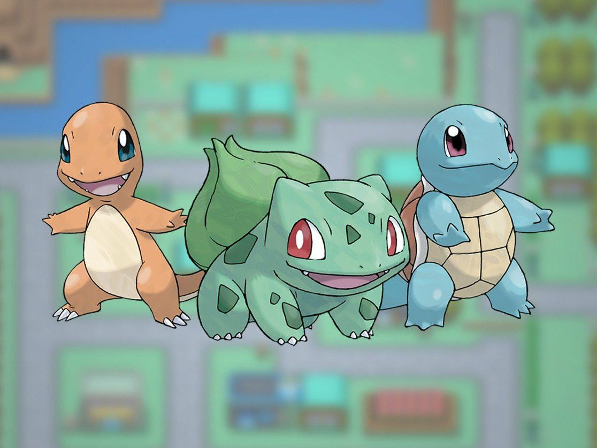
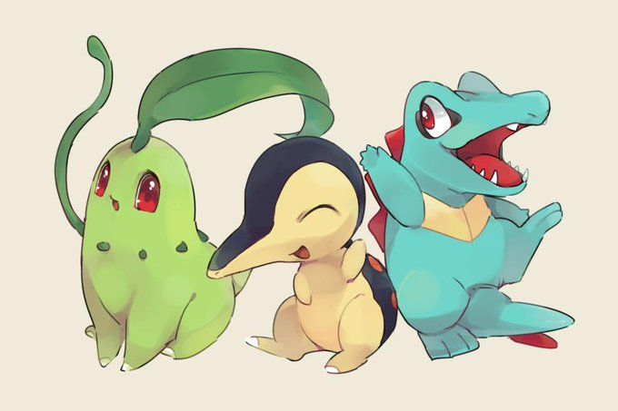
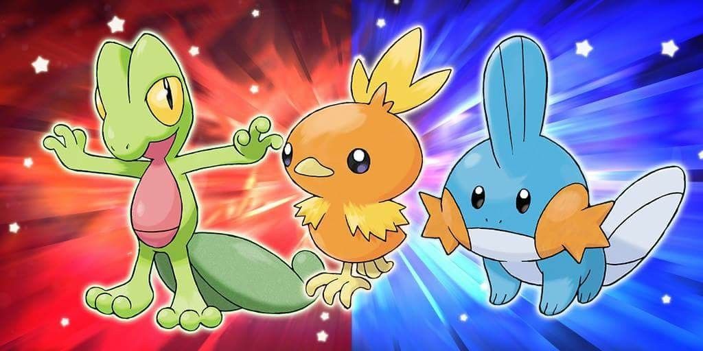
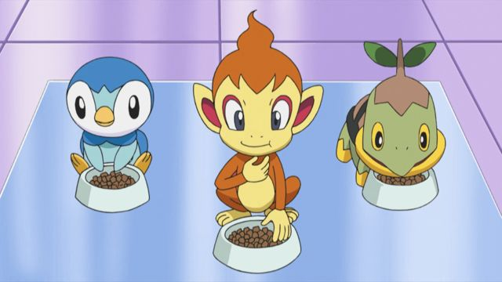
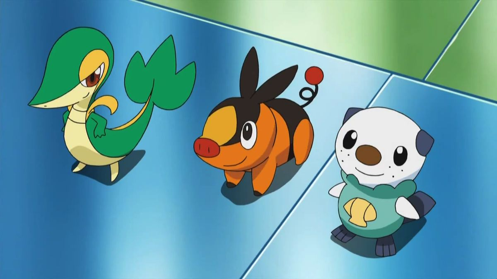
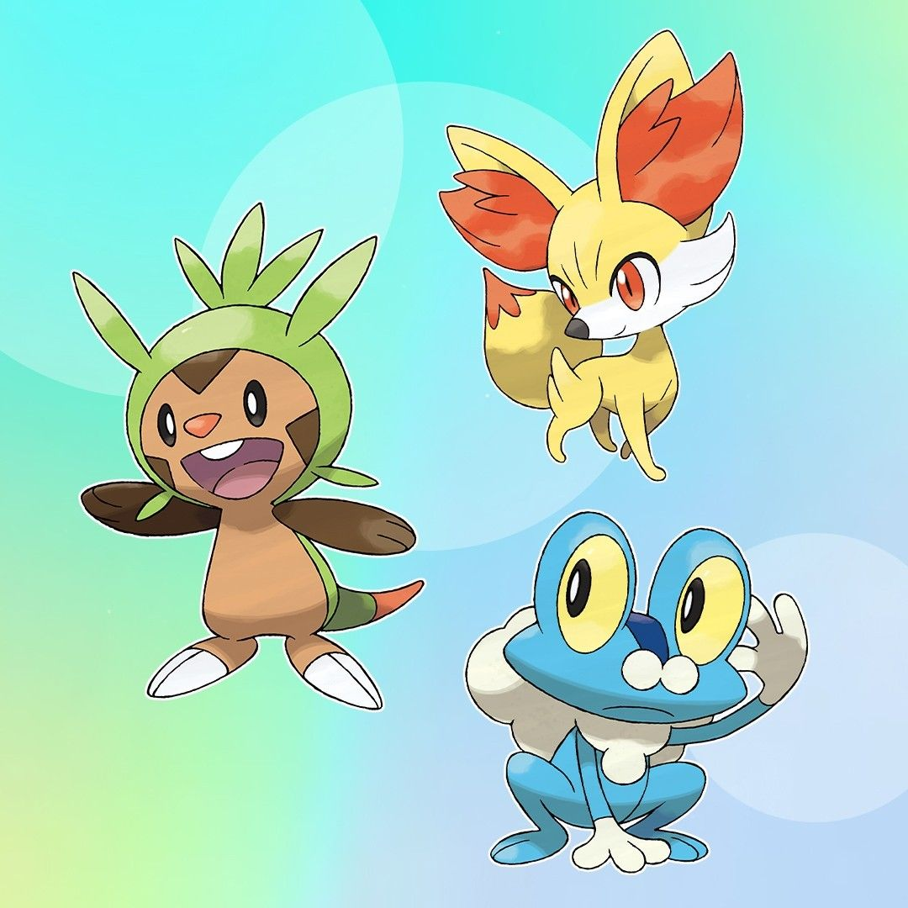
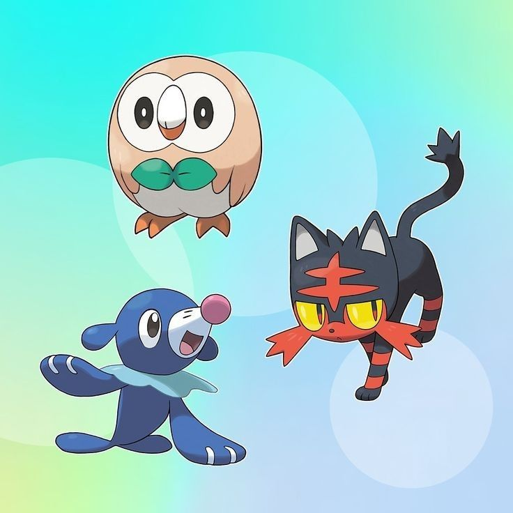
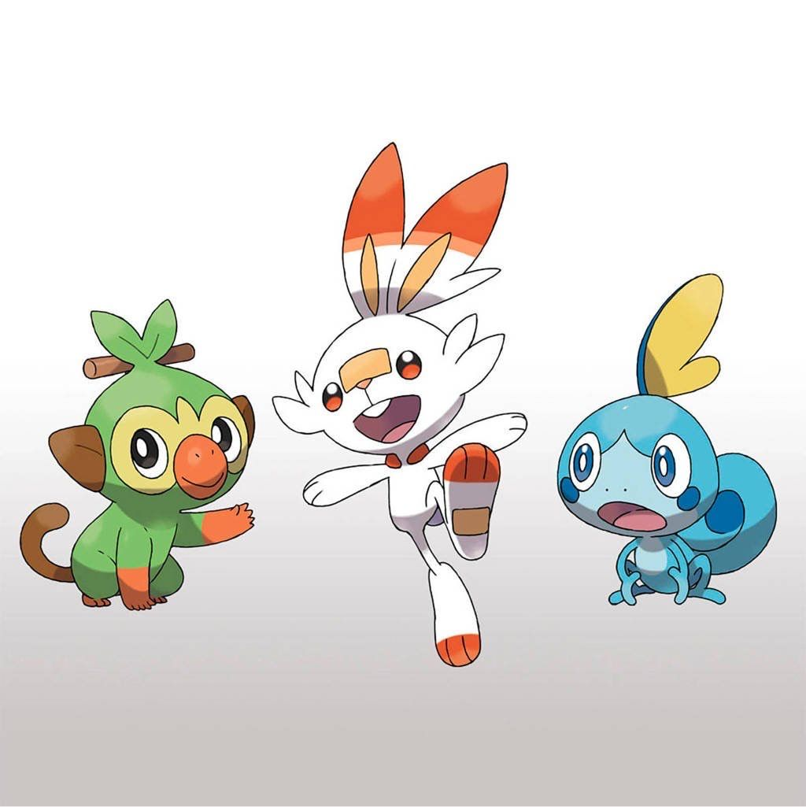
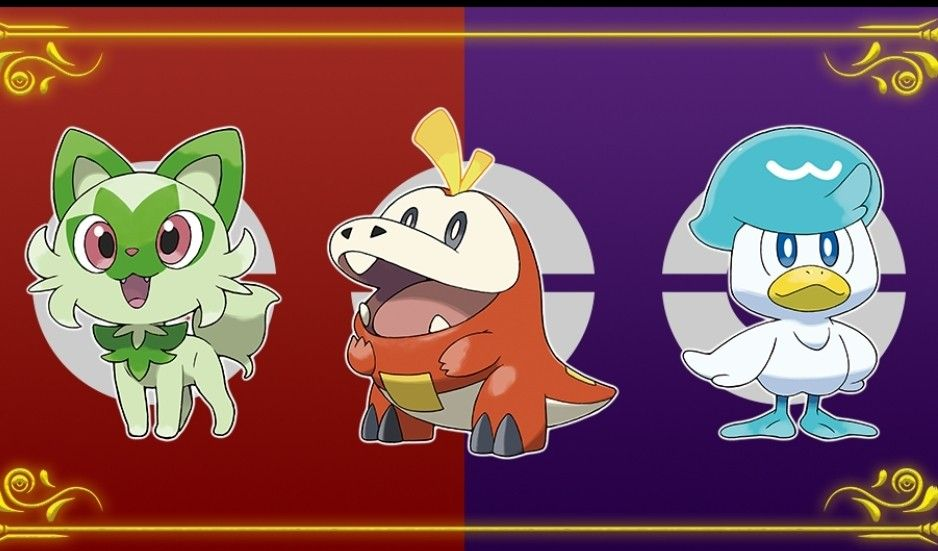
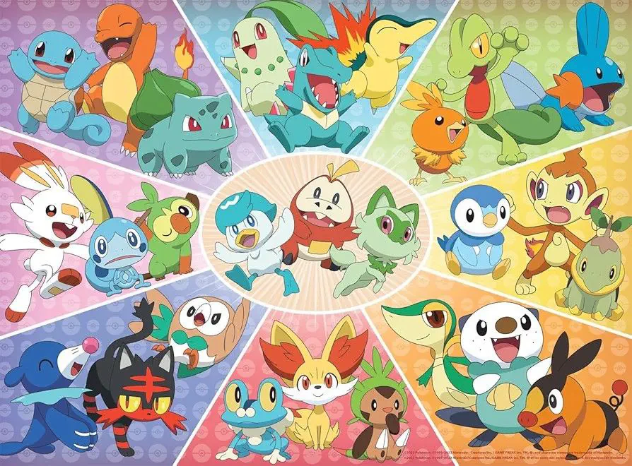

Un mundo de aventuras pokémon
Los Pokémon iniciales son los primeros compañeros que recibe un entrenador al comenzar su aventura. En cada generación de los videojuegos principales se presentan tres opciones de los tipos Planta, Fuego y Agua. A continuación encontrarás los Pokémon iniciales de todas las generaciones.
Bulbasaur 🌿
Charmander 🔥
Squirtle 💧

Descripción: Fueron los primeros Pokémon iniciales de la franquicia, presentados en Pokémon Rojo y Azul en 1996.
Chikorita 🌿
Cyndaquil 🔥
Totodile 💧

Descripción: Introducidos en Pokémon Oro y Plata.
Treecko 🌿
Torchic 🔥
Mudkip 💧

Descripción: Llegaron con Pokémon Rubí y Zafiro.
Turtwig 🌿
Chimchar 🔥
Piplup 💧

Descripción: Debutaron en Pokémon Diamante y Perla.
Snivy 🌿
Tepig 🔥
Oshawott 💧

Descripción: Introducidos en Pokémon Blanco y Negro.
Chespin 🌿
Fennekin 🔥
Froakie 💧

Descripción: Llegaron con Pokémon X e Y.
Rowlet 🌿
Litten 🔥
Popplio 💧

Descripción: Debutaron en Pokémon Sol y Luna.
Grookey 🌿
Scorbunny 🔥
Sobble 💧

Descripción: Presentados en Pokémon Espada y Escudo.
Sprigatito 🌿
Fuecoco 🔥
Quaxly 💧

Descripción: Son los iniciales de Pokémon Escarlata y Púrpura.
En todas las generaciones principales siempre existe un Pokémon de tipo Planta, uno de tipo Fuego y uno de tipo Agua. La elección del inicial es una de las decisiones más importantes al comenzar la aventura.
